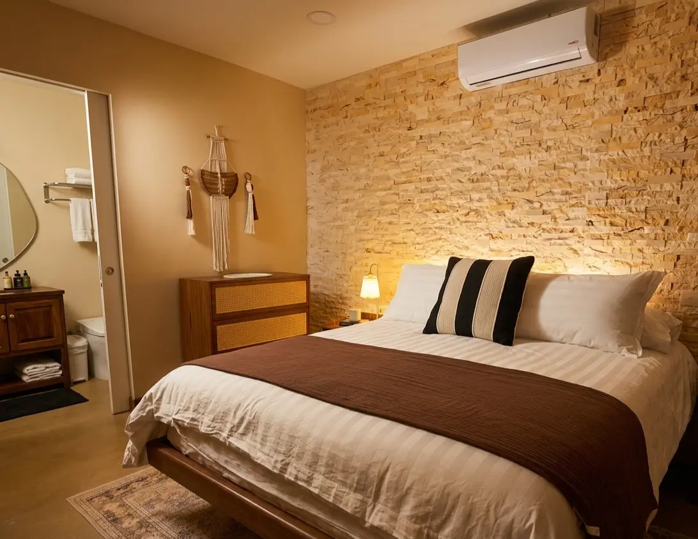
La Habitación de Jardín
Una suite de jardín privada para dos, con desayuno, baño propio y acceso a la piscina. Las suites de arriba pueden sumar una cama para hasta cuatro.
Ver la habitación
Villa del Sol Garden es una villa boutique de bienestar en la Costa del Sol. Seis suites de jardín, piscina privada y una caminata de 5 minutos a la playa, pensada para el descanso, la naturaleza y la transformación.
Tarifas directas desde $125 por noche. Tarifas para grupos o estancias largas disponibles.
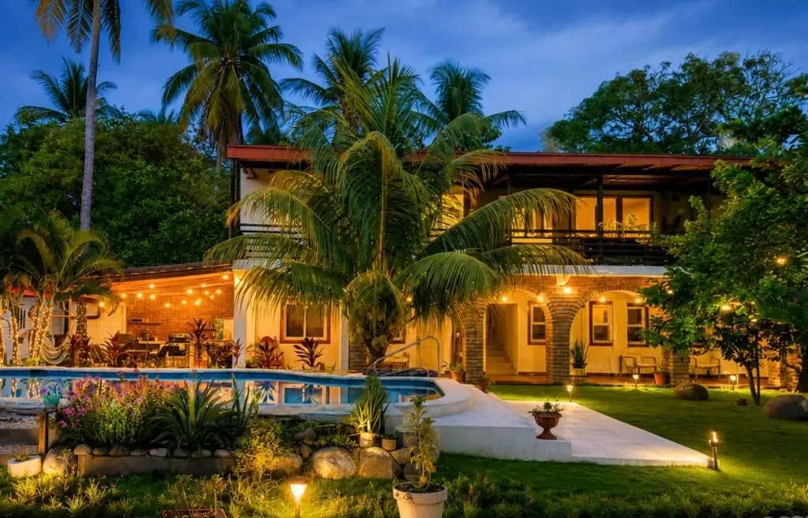
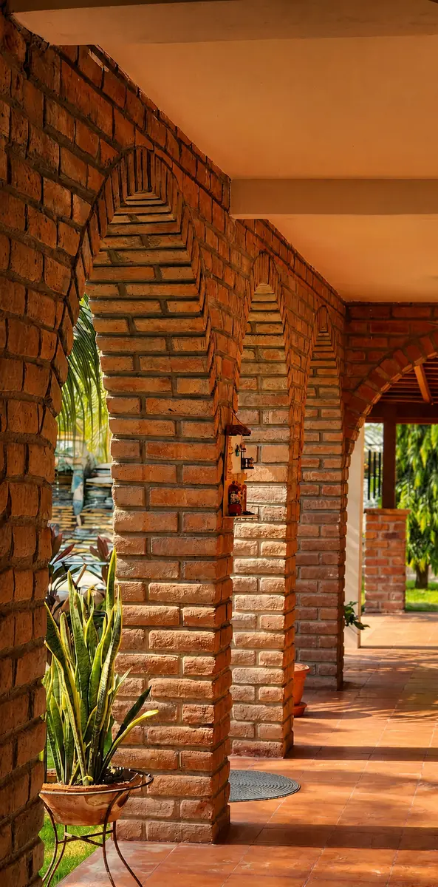
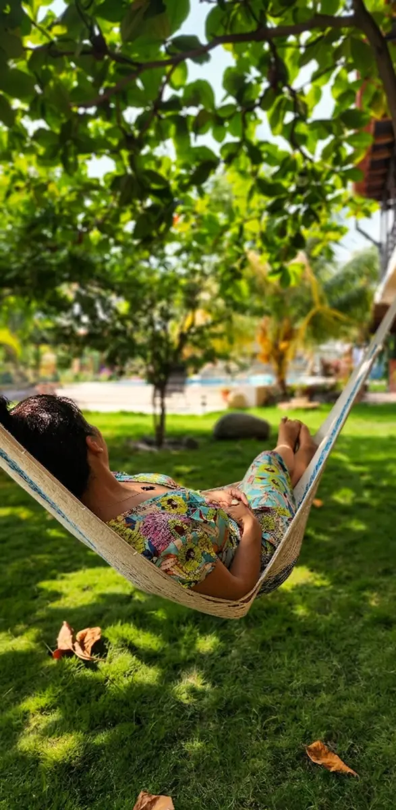
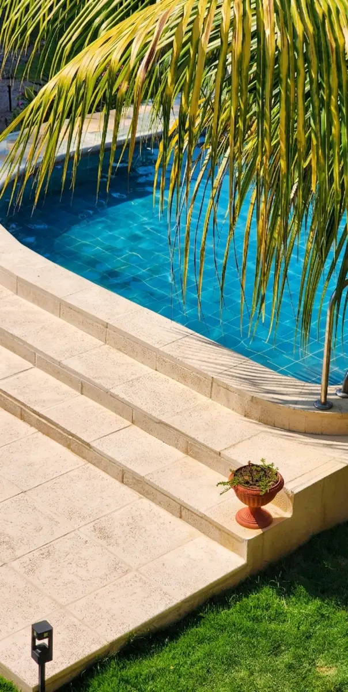
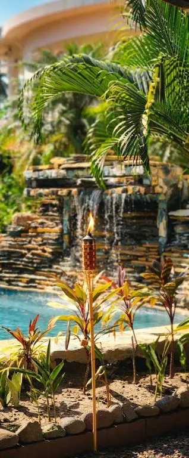
Villa del Sol Garden se encuentra en la costa del Pacífico de El Salvador, Playa Costa del Sol, a 30 minutos en auto del Aeropuerto Internacional de San Salvador y a 5 minutos a pie del mar. El jardín de huéspedes reúne seis suites en dos niveles, alrededor de una piscina privada, una cocina al aire libre y un estudio de yoga y arte, con agua caliente en todas.
Ven solo o en pareja, con toda la familia o en grupo, u organiza un retiro junto al mar. El desayuno está incluido en cada estancia.
A solo 5 minutos a pie de la playa
Una suite de jardín privada para dos, con desayuno, baño propio y acceso a la piscina. Las suites de arriba pueden sumar una cama para hasta cuatro.
Ver la habitación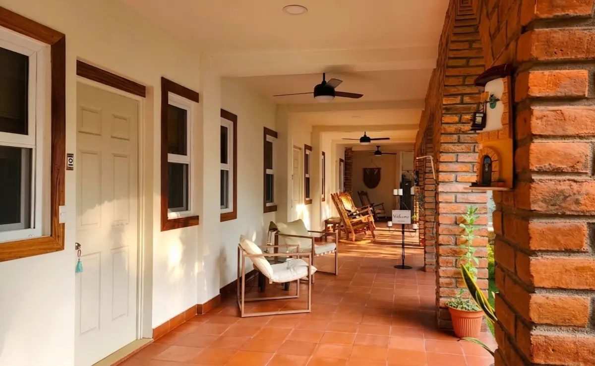
Reserva las seis suites del jardín para tu familia o grupo, hasta 16 huéspedes. Dos niveles, todas las suites, y la piscina y la cocina solo para ustedes.
Ver la colección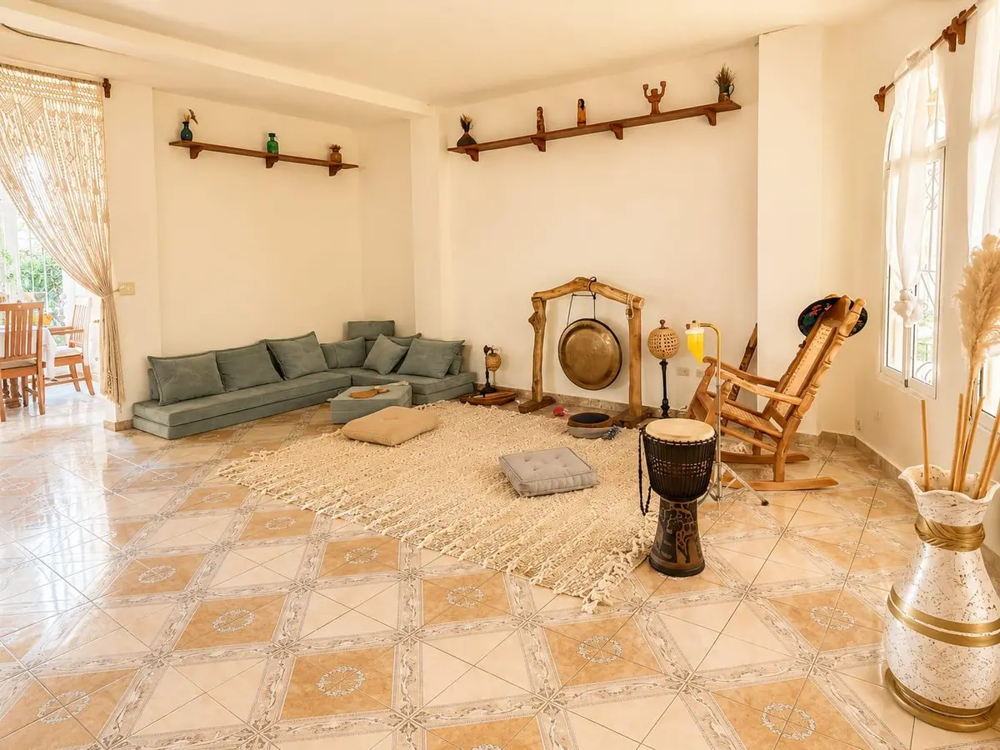
Organiza tu retiro junto al mar. Estudio de yoga y arte, sala de sonido, chef y apoyo local. Somos co-anfitriones del terreno para que tú guíes al grupo.
Explorar el retiroIdeal para retiros, viajeros solos, parejas, familias, creativos, amantes de la naturaleza y quienes buscan belleza, tranquilidad y mañanas lentas rodeadas de naturaleza.
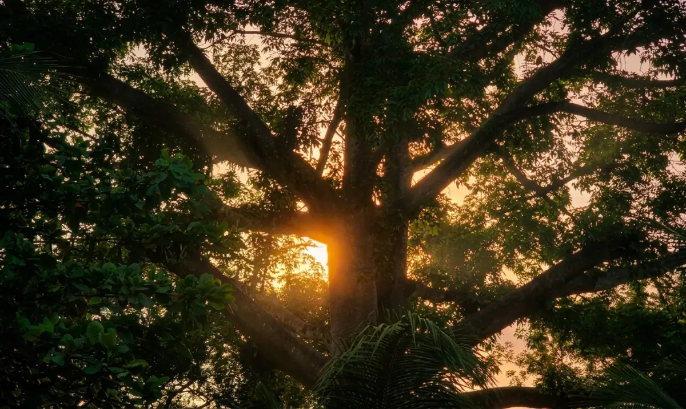
Canto de aves, gallos, jardines y el Estero Jaltepeque cerca, con manglares, paseos en lancha y viajes de pesca disponibles.
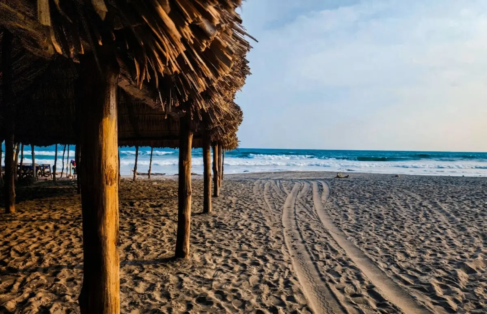
La playa está a 5 minutos a pie, con restaurantes frente al mar y hermosos atardeceres sobre el agua.
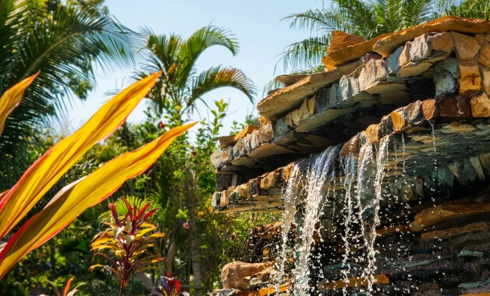
La piscina, el estudio de yoga, un masaje bajo el toldo y mañanas lentas con café en el jardín.
Obras de arte local se exhiben por toda la propiedad y están a la venta.
Por la zona: la vida salvadoreña local, con un mercado pequeño y sencillo y pupuserías, restaurantes de playa como Astra, Tortuga Village, La Ola Beto y Tesoro Beach, una farmacia a pocos minutos y una iglesia a poca distancia a pie.
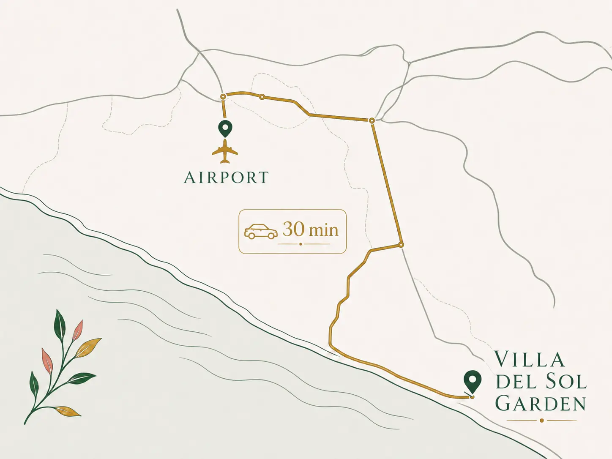
Pronto, un mapa dibujado a mano con la caminata de la villa a la playa.
Abrir en Google MapsReserva directamente con la villa y evita las comisiones de las plataformas. Tarifas desde $125 por noche. Tarifas promocionales disponibles para días festivos, grupos o estancias largas.
También disponible en
A unos 30 minutos en auto del Aeropuerto Internacional de San Salvador (SAL). Alquiler de autos y traslados de ida y vuelta disponibles por un costo adicional.
La playa está a solo 5–10 minutos a pie, según tu ritmo. El estero de manglares está a unos 15 minutos a pie de la orilla, o a unos 10 minutos en auto de la marina más cercana.
Sí. La Colección de Jardín son las seis suites, para hasta 16 huéspedes, desde $425 por noche.
Sí, está hecha para ellos: estudio de yoga y arte, sala de sonido, piscina, chef y apoyo local. Somos co-anfitriones para que tú guíes.
El café y el desayuno están incluidos. El almuerzo, los masajes, los paseos en lancha, la pesca y el traslado de ida y vuelta del aeropuerto son adicionales opcionales.
Un mercado local y pupuserías a minutos a pie, además de restaurantes de playa como Astra, Nazca en Tortuga Village, La Ola Beto, Tesoro Beach y restaurantes del estero como Nammu en Astra Beach Club, Mar y Sol, La Pampa y más, a poca distancia en auto.
Un espacio de bienestar: sin fiestas, música baja, energía cuidada y naturaleza cerca. Pensado para el descanso, la reflexión y la inspiración creativa. Cultivamos un ambiente intencional donde la conexión se aprecia y la música se disfruta con conciencia. Las pautas completas de la casa se comparten al reservar.